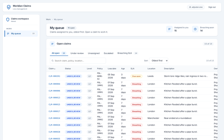
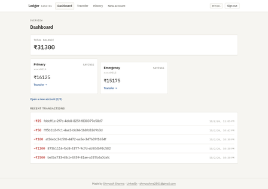
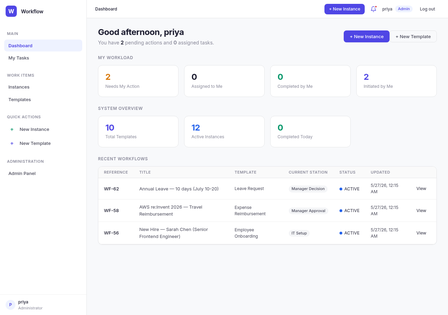

Full-stack engineer · Pune, India
Shreyash Sharma
I am a full-stack engineer with three years of professional experience, working mainly on
insurance and banking platforms. In practice that means Java and Spring Boot services,
Angular front ends, and relational databases — PostgreSQL by preference, and Oracle with
PL/SQL where the data already lives. I have spent enough of that time on product
configuration and policy issuance to know where these systems actually break, and it is
rarely the forms.
Open to full-time full-stack roles and freelance work
Pune, India — IST (UTC+5:30)
3 yrs
in a full-time role, on insurance platforms
20+
projects delivered, in the role and independently
70,000 a day
policies issued or renewed, on the platform I work on
2 weeks → 3 days
to configure a new insurance product, in the role
What I work with
- Services and APIs. Java, Spring Boot and Spring Cloud — the part that holds the rules, the limits and the money, and the part other systems call.
- Interfaces. Angular and TypeScript — the screens a person actually uses, on a desktop and on a phone.
- Data. PostgreSQL, and Oracle with PL/SQL where the records already live. Database designs built to survive years of change.
- Sign-in and permissions. Keycloak with OIDC — who is allowed to do what, and a record that can prove it afterwards.
- Events between services. Kafka, with a transactional outbox — so a message is not lost when something restarts mid-flight.
- AI and automation. Python, FastAPI and FAISS — retrieval that answers from real documents and names the passages it used; offline analysis that maps a codebase without a network call; and scheduled jobs that chase overdue work.
- Getting it running. Docker, nginx, Git and CI — the deployment, so the thing stays up once it is built.
Selected work
Platform systems
A claimant files a loss online and the claim routes itself to the least-loaded
qualified adjuster. Adjusters work it through review, verification and decision;
supervisors see the whole book. Authority limits, an audit trail that cannot be
edited, and a wall between what a claimant and an adjuster may see are all
enforced in the service rather than in the screen.

Eight services behind one gateway — accounts, transfers, payments, an immutable
ledger and notifications — each owning its own database. A transfer is one ACID
transaction with a conditional debit, so two racing requests cannot overdraw an
account, and the ledger entry is written to a transactional outbox in that same
transaction before it reaches Kafka.

Phase 1–2 implemented
Phase 3 planned
Organisations define versioned templates, configure stations with role-based
permissions, and move work between those stations. Every move passes one engine
that runs five checks in order — instance active, correct role, valid transition,
required tasks done, version unchanged — and all five must pass before anything
commits.

Engineering notes
Seven write-ups on what broke while building and hosting these systems, and what the
measurements said afterwards. A flex column that sized itself to
784px inside a 390px viewport. A JVM retune that saved 1.4 GB, where part of
the delta turned out to be warm-versus-cold rather than flags. An infrastructure
consolidation that saved 38 MB, not the 150 MB estimated — published anyway,
because the honest number is the useful one. A dated database partition that started
rejecting every insert on the first of the following month.
Two of those results contradicted the estimate I started with. That is the point of
writing them down.
I am open to full-time full-stack roles and to freelance work — a service, an integration
or a migration. The fastest way to reach me is email, and I am happy to walk through any
of the systems above. There is more about how I work on the
about page.